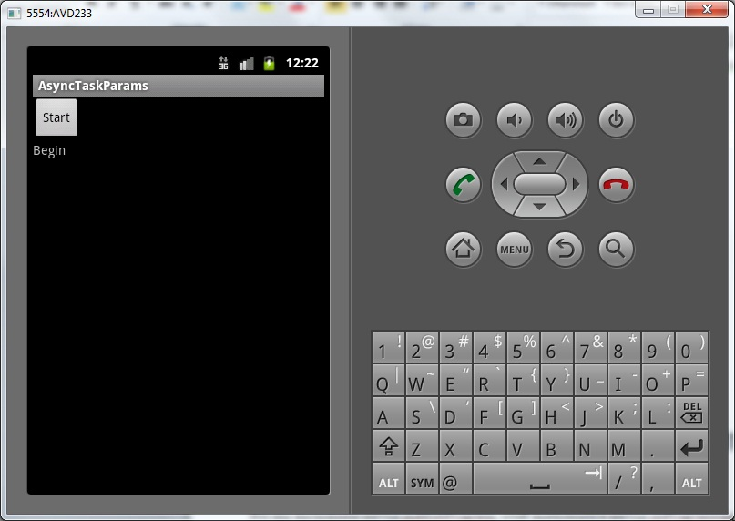
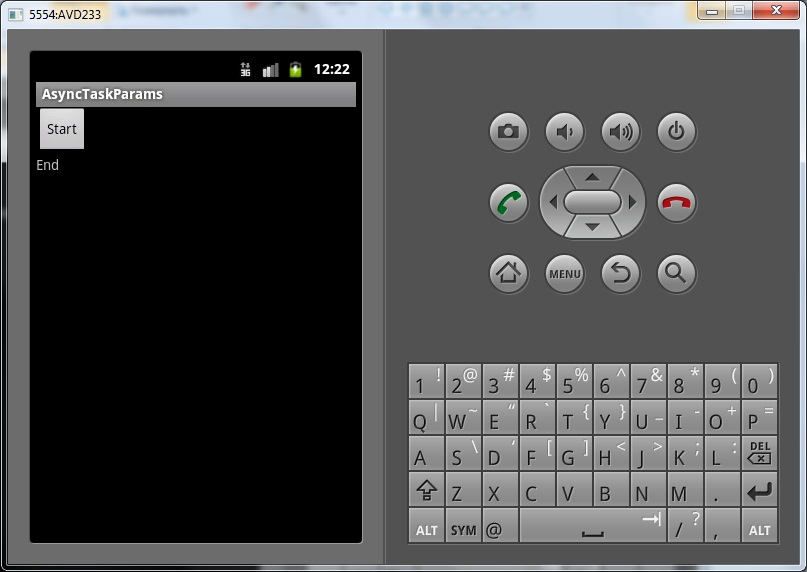

В этом уроке:
- используем параметры
- выводим промежуточные результаты
На прошлом уроке мы увидели, как AsyncTask может взаимодействовать с экраном до и после выполнения задачи. Но часто бывает, что нужно в процессе работы выводить промежуточный результат. На этом уроке посмотрим, как это можно реализовать. А также разберемся, как можно передавать данные в AsyncTask.
При описании класса-наследника AsyncTask мы в угловых скобках указываем три типа данных:
1) Тип входных данных. Это данные, которые пойдут на вход AsyncTask
2) Тип промежуточных данных. Данные, которые используются для вывода промежуточных результатов
3) Тип возвращаемых данных. То, что вернет AsyncTask после работы.
В прошлом уроке мы указали <Void, Void, Void>. Это означало, что мы не используем параметры. Теперь попробуем воспользоваться ими. Нам надо вместо Void указать типы данных, которые будем использовать. В этом уроке используем первые два, третий пока оставим Void. Первые два – это у нас входные данные и промежуточные результаты.
Мы будем писать приложение, эмулирующее загрузку файлов. На вход в AsyncTask будем давать адреса файлов - для этих данных используем тип String. В процессе загрузки файлов будем выдавать кол-во уже загруженных файлов, как промежуточные результаты. Для этих данных можно использовать тип Integer. Т.е. в угловых скобках первый тип у нас будет String, а второй – Integer. Третий мы не используем, там снова укажем Void.
Создадим проект:
Project name: P0871_AsyncTaskParams
Build Target: Android 4.0
Application name: AsyncTaskParams
Package name: ru.startandroid.develop.p0871asynctaskparams
Create Activity: MainActivity
strings.xml:
<?xml version="1.0" encoding="utf-8"?>
<resources>
<string name="app_name">AsyncTaskParams</string>
<string name="start">Start</string>
</resources>main.xml:
<?xml version="1.0" encoding="utf-8"?>
<LinearLayout
xmlns:android="http://schemas.android.com/apk/res/android"
android:layout_width="fill_parent"
android:layout_height="fill_parent"
android:orientation="vertical">
<Button
android:layout_width="wrap_content"
android:layout_height="wrap_content"
android:onClick="onclick"
android:text="@string/start">
</Button>
<TextView
android:id="@+id/tvInfo"
android:layout_width="wrap_content"
android:layout_height="wrap_content"
android:text="">
</TextView>
</LinearLayout>Нажав на кнопку будем стартовать задачу, в TextView будем выводить информацию о работе.
MainActivity.java:
package ru.startandroid.develop.p0871asynctaskparams;
import java.util.concurrent.TimeUnit;
import android.app.Activity;
import android.os.AsyncTask;
import android.os.Bundle;
import android.view.View;
import android.widget.TextView;
public class MainActivity extends Activity {
MyTask mt;
TextView tvInfo;
public void onCreate(Bundle savedInstanceState) {
super.onCreate(savedInstanceState);
setContentView(R.layout.main);
tvInfo = (TextView) findViewById(R.id.tvInfo);
}
public void onclick(View v) {
mt = new MyTask();
mt.execute("file_path_1", "file_path_2", "file_path_3", "file_path_4");
}
class MyTask extends AsyncTask<String, Integer, Void> {
@Override
protected void onPreExecute() {
super.onPreExecute();
tvInfo.setText("Begin");
}
@Override
protected Void doInBackground(String... urls) {
try {
int cnt = 0;
for (String url : urls) {
// загружаем файл
downloadFile(url);
// выводим промежуточные результаты
publishProgress(++cnt);
}
// разъединяемся
TimeUnit.SECONDS.sleep(1);
} catch (InterruptedException e) {
e.printStackTrace();
}
return null;
}
@Override
protected void onProgressUpdate(Integer... values) {
super.onProgressUpdate(values);
tvInfo.setText("Downloaded " + values[0] + " files");
}
@Override
protected void onPostExecute(Void result) {
super.onPostExecute(result);
tvInfo.setText("End");
}
private void downloadFile(String url) throws InterruptedException {
TimeUnit.SECONDS.sleep(2);
}
}
}При описании класса-наследника AsyncTask мы использовали типы данных <String, Integer, Void>. Напомню, что первый (String) используется для входных данных, второй (Integer) – для промежуточных данных, третий (Void) – для выходных данных (пока не используем).
В методе onPreExecute, который выполняется перед началом работы AsyncTask, мы пишем в TextView текст Begin.
Обратите внимание на тип входных данных в методе doInBackground. Это String. Т.е. здесь используется первый тип из угловых скобок, тип входных данных. В нашей задаче, мы подаем на вход AsyncTask набор адресов файлов для загрузки. Метод doInBackground принимает эти данные и в цикле по одному загружает эти файлы. После загрузки каждого файла он вызывает метод publishProgress и передает туда кол-во загруженных файлов. После загрузки всех файлов отключаемся.
Когда мы в doInBackground вызываем метод publishProgress и передаем туда данные, срабатывает метод onProgressUpdate и получает эти данные. Тип этих данных равен второму типу из угловых скобок, т.е. Integer. Метод onProgressUpdate используется для вывода промежуточных результатов. Он выполняется в основном потоке и имеет доступ к UI. Из doInBackground мы (с помощью publishProgress) передали в onProgressUpdate кол-во загруженных файлов – это кол-во и выводим в TextView.
Метод onPostExecute выполняется по завершению задачи, выводим текст End в TextView.
Метод downloadFile – эмуляция загрузки файлов, просто пауза в 2 секунды.
В методе onclick мы создаем AsyncTask и запускаем его методом execute. На вход этому методу передаем набор переменных типа String. String используется, потому что мы его указали в угловых скобках на первом месте – это тип входных данных. Я передаю данные просто перечислив их через запятую, но можно использовать и массив.
Все сохраним и запустим. Нажмем Start. Появился текст Begin

Т.е. сработал метод onPreExecute
Далее пошел отсчет загруженных файлов
Это мы вызываем метод publishProgress, чтоб выполнился метод onProgressUpdate и обновил экран
Появился текст End

Это выполнился onPostExecute
Сейчас, наверно, кажется, что методов целая куча и в них можно запутаться, попробуем резюмировать:
execute – этот метод мы явно вызываем, чтобы начать выполнение задачи. В него мы передаем набор данных определенного типа. Этот тип указан первым в угловых скобках при описании AsyncTask (в нашем примере это String).
onPreExecute и onPostExecute – их мы сами явно не вызываем, они вызываются системой в начале и конце выполнения задачи.
doInBackground – в нем мы указываем, что нам надо сделать в новом потоке. На вход поступают данные, которые мы передали в execute. Явно не вызываем.
publishProgress – явно вызываем в методах doInBackground, onPreExecute или onPostExecute. На вход передаем промежуточные данные определенного типа. Этот тип указан вторым в угловых скобках при описании AsyncTask (в нашем примере это Integer).
onProgressUpdate – метод получает на вход промежуточные результаты. Сами не вызываем, вместо этого используем метод publishProgress. То, что передаем в publishProgress, попадает в onProgressUpdate.
Еще имеет смысл пояснить такой момент. Метод onProgressUpdate принимает на вход набор параметров. Мы же в этом уроке передаем ему (через publishProgress) всего одно значение. Поэтому чтобы прочесть это значение мы берем первый элемент массива ([0]).
Ну и на всякий случай напишу, что в этом примере мы использовали String и Integer, но вы в решении ваших задач можете использовать какие угодно типы-классы, хоть свои собственные.